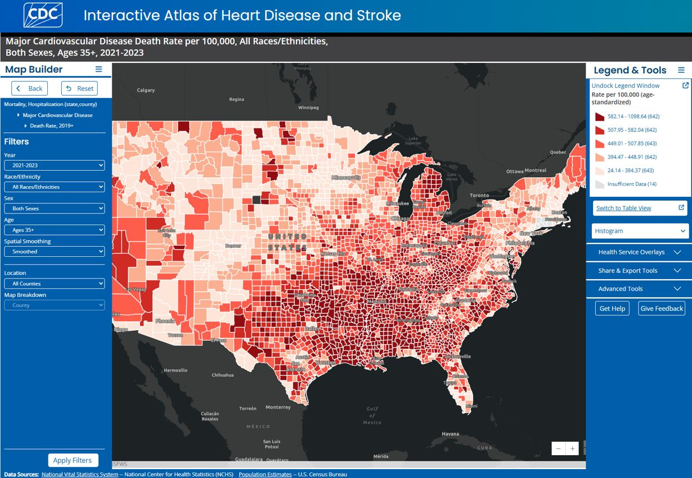

Cardiovascular Health Burden in the United States
Cardiovascular disease (CVD) remains one of the most significant public health challenges in the United States. It includes conditions affecting the heart and blood vessels, such as coronary artery disease, heart failure, hypertension, and stroke. Explore the statistics below to understand the impact of cardiovascular disease.
Leading Cause of Death
Heart disease remains the leading cause of death in the United States.
Cardiovascular Deaths
Cardiovascular disease accounts for approximately one-third of deaths in the United States.
Mortality Burden
A person in the United States dies from cardiovascular disease approximately every 34 seconds.
Economic Burden
Heart disease healthcare services and medication costs exceeded $168 billion during 2021–2022.
Why Cardiovascular Health Matters
Cardiovascular disease impacts individuals, families, communities, and healthcare systems. Despite advancements in treatment and prevention, risk factors such as hypertension, obesity, diabetes, and tobacco use continue to contribute to cardiovascular morbidity and mortality.
Public health interventions focused on prevention, health education, and equitable healthcare access are essential for reducing the burden of cardiovascular disease.
Major Cardiovascular Risk Factors
Select each risk factor to learn how it contributes to cardiovascular disease.
High blood pressure increases the workload of the heart and can damage blood vessels over time, increasing the risk of heart attack, stroke, and heart failure.
Prevention: Routine blood pressure monitoring, medication adherence, reduced sodium intake, and regular healthcare visits.
Elevated blood glucose levels can damage blood vessels and increase the likelihood of developing cardiovascular complications.
Prevention: Blood glucose monitoring, early screening, healthy eating, physical activity, and appropriate treatment.
Excess body weight is associated with increased risk of hypertension, diabetes, high cholesterol, and cardiovascular disease.
Prevention: Supportive nutrition environments, physical activity, and access to preventive healthcare.
Tobacco use damages blood vessels, increases blood pressure, and contributes to plaque buildup within arteries.
Prevention: Smoking cessation programs, counseling, tobacco control policies, and access to cessation resources.
Insufficient physical activity contributes to cardiometabolic risk, including obesity, hypertension, and poor cardiovascular health.
Prevention: Safe parks, walking trails, active transportation, and community exercise opportunities.
Diets high in sodium, saturated fat, added sugars, and processed foods may increase cardiovascular risk.
Prevention: Healthy food access, nutrition education, and policies supporting nutritious food environments.
Cardiovascular Health Disparities
Cardiovascular disease does not affect all populations equally. Explore how social and structural conditions can influence cardiovascular outcomes.
Healthcare Access
Limited access to primary care, preventive screenings, insurance coverage, and affordable medications can delay diagnosis and treatment. Early detection and continuity of care are important for preventing cardiovascular complications.
Economic Factors
Income, employment, housing stability, and food security influence an individual’s ability to maintain cardiovascular health. Financial barriers may limit access to nutritious foods, medications, healthcare services, and opportunities for physical activity.
Environmental Conditions
Neighborhood environments can influence cardiovascular risk through air pollution, limited access to green spaces, unsafe walking conditions, and reduced availability of healthy foods.
Structural & Social Factors
Systemic inequalities, discrimination, chronic stress, and unequal resource distribution can contribute to disparities in cardiovascular outcomes. These conditions influence health opportunities across communities and populations.
Prevention & Public Health Strategies
Cardiovascular prevention requires action at multiple levels. Select an approach to explore strategies for improving cardiovascular health.
Individual-Level Prevention
- Routine blood pressure screening
- Monitoring cholesterol and blood glucose
- Maintaining a balanced diet
- Regular physical activity
- Smoking cessation
- Medication adherence
- Preventive healthcare visits
Population-Level Prevention
- Community-based cardiovascular health education
- Accessible preventive healthcare services
- Policies promoting healthy food environments
- Tobacco control initiatives
- Improved walkability and physical activity environments
- Addressing social determinants of health
- Reducing healthcare inequities
Public Health Significance
Cardiovascular disease prevention represents a critical opportunity to improve population health outcomes and reduce premature mortality. By addressing modifiable risk factors and structural barriers to healthcare, public health professionals can implement evidence-based interventions that promote healthier communities.
A population health approach emphasizes prevention, equitable access to healthcare, community engagement, health policy, and data-driven decision-making to reduce cardiovascular disease burden.
Explore the Cardiovascular Data
Learn how cardiovascular mortality varies across geographic areas and populations. Use data to identify disparities, understand disease burden, and inform public health action.

Sources & Further Reading
::::::::::::::::::::::::::::::::::::::::::::::::::::: :::::::::::::::::::::::::::::::::::::::::::::::::::::: :::::::::::::::::::::::::::::::::::::::::::::::::::::::::::